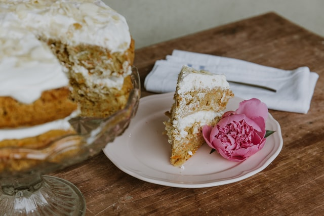

Carrot Cake

Description
An old-fashioned carrot cake that's got spice! Enjoy the taste of sweet carrots,
tropical pineapple and a medly of warm spices.
Pecans can be substituted for walnuts.
Ingredients
- 2 cups white sugar
- ¾ cup vegetable oil
- 3 eggs
- 1 teaspoon vanilla extract
- ¾ cup buttermilk
- ¾ cup buttermilk
- 1 cup flaked coconut
- 1 (15 ounce) can crushed pineapple, drained
- 2 cups all-purpose flour
- 2 teaspoons baking soda
- 2 teaspoons ground cinnamon
- 1 ½ teaspoons salt
- 1 cup chopped walnuts
- ½ cup butter
- 1 (8 ounce) package cream cheese
- 1 teaspoon vanilla extract
- 4 cups confectioners' sugar
Directions
- Preheat oven to 350 degrees F (175 degrees C). Grease a 9x13 inch baking pan.
Set aside.
- In a large bowl, mix together sugar, oil, eggs, vanilla, and buttermilk. Stir in carrots,
coconut, vanilla, and pineapple. In a separate bowl, combine flour, baking soda, cinnamon,
and salt; gently stir into carrot mixture. Stir in chopped nuts. Spread batter into prepared pan.
- Bake for 55 minutes or until toothpick inserted into cake comes out clean. Remove from oven, and set aside to cool.
- In a medium mixing bowl, combine butter or margarine, cream cheese, vanilla, and confectioners sugar.
Blend until creamy. Frost cake while still in the pan.
Notes
- Prep: 30 mins
- cook: 55 mins
- additional: 35 mins
- total: 2 hrs
- Yield: 15 servings